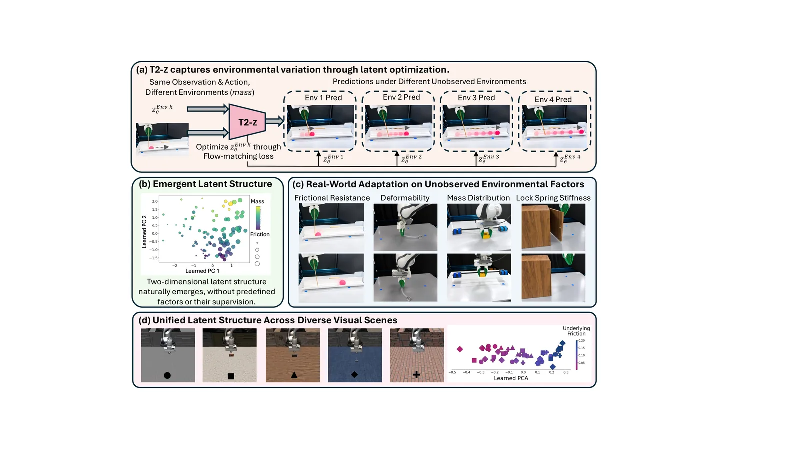
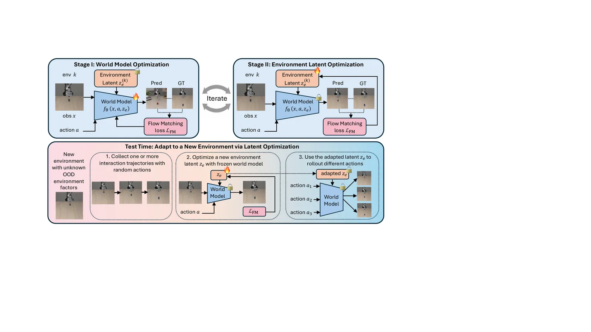
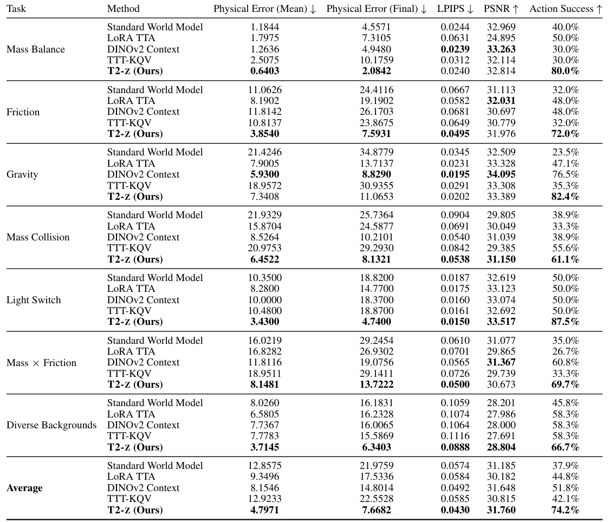
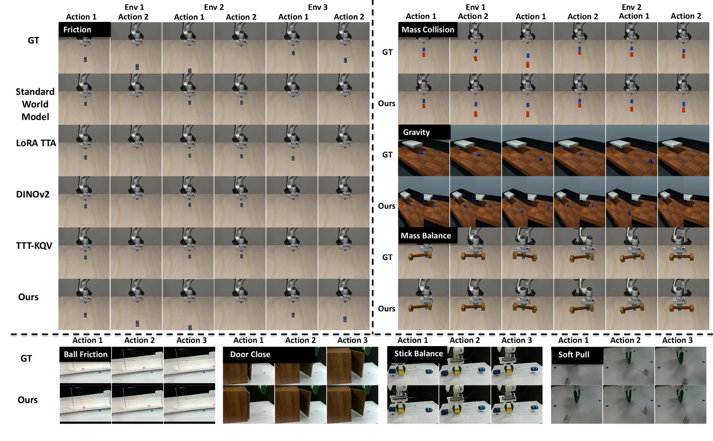

O Problema da Cegueira Física
Robôs que operam em ambientes dinâmicos enfrentam um obstáculo fundamental: o que eles veem não é suficiente para prever como o mundo responderá às suas ações. Duas cenas podem ser visualmente idênticas, mas ter propriedades físicas subjacentes drasticamente diferentes. Empurrar uma caixa sobre gelo versus sobre carpete gera resultados distintos, mesmo que a ação e a observação inicial sejam as mesmas. Fatores como atrito, massa, distribuição de massa, rigidez de molas ou regras humanas abstratas (como se um interruptor liga ou desliga a luz) permanecem ocultos aos sensores visuais padrão.
Modelos de mundo tradicionais, que tentam prever o futuro a partir de estados observados, frequentemente falham quando encontram configurações ambientais não vistas durante o treinamento. Abordagens anteriores tentam resolver isso explicitamente, especificando quais fatores físicos podem variar e como parametrizá-los. No entanto, essa abordagem não escala para variações desconhecidas ou combinadas. Exige conhecimento prévio exato do que pode mudar, algo improvável em cenários do mundo real.
Os humanos, por outro lado, usam o que é chamado de "análise por síntese". Usamos modelos generativos internos não apenas para antecipar resultados, mas também inversamente para inferir a estrutura latente que melhor explica o que observamos. A pergunta natural que motiva este trabalho é: seria possível capturar esses fatores ambientais ocultos em uma representação latente que seja otimizada diretamente a partir de interações em tempo de teste?

A Ideia Central: Latentes de Ambiente Otimizáveis
O paper introduz o T2-Z (Test-Time Optimization of Environment Latents), uma técnica que augmenta modelos de mundo robóticos com um vetor latente aprendível de ambiente, denotado como z_e. Este vetor é uma representação compacta e aleatoriamente inicializada, projetada para codificar os fatores não observados que governam como um ambiente responde à interação.
Diferente de abordagens que tentam inferir essas variáveis através de um codificador histórico treinado, o T2-Z trata a inferência do ambiente como um problema de otimização direta. Durante o treinamento, o método alterna entre dois estágios para permitir que a estrutura latente surja puramente através da predição do mundo, sem supervisão sobre quais fatores existem ou quais valores eles assumem.
No primeiro estágio, o vetor latente z_e é fixado e o modelo de mundo é otimizado para aprender dinâmicas condicionadas por ação compartilhadas entre todos os ambientes de treinamento. No segundo estágio, o modelo de mundo é congelado e o vetor z_e é otimizado através do erro de predição, permitindo que ele capture a variação específica do ambiente não explicada pelo modelo geral. Ambos os estágios usam a mesma função de perda de correspondência de fluxo (flow-matching loss).

Mecanismo de Adaptação em Tempo de Teste
A inovação principal do T2-Z ocorre no momento da inferência. Quando o robô enfrenta uma nova configuração ambiental não vista durante o treinamento (Out-of-Distribution), o modelo de mundo global permanece congelado. Em vez disso, um novo vetor z_e é inicializado aleatoriamente e otimizado iterativamente para explicar os resultados das interações observadas.
Para cada interação de teste, o sistema atualiza z_e por múltiplos passos de otimização, minimizando o erro de predição na trajetória observada usando o mesmo objetivo de correspondência de fluxo usado no treinamento. Isso transforma o modelo de mundo congelado em um simulador adaptado ao ambiente específico naquele momento. Uma vez otimizado, o latente permite que o robô preveja e compare os resultados de ações candidatas antes da execução.
Como a inferência é baseada em otimização e não amortecida por um codificador de história aprendido, o T2-Z não está atrelado ao número de trajetórias usadas no treinamento. Ele pode incorporar flexivelmente qualquer número de trajetórias de teste, desde uma única interação até várias, ajustando-se à quantidade de dados disponíveis em tempo real.
Implementação e Detalhes Técnicos
Os autores adaptam o modelo de mundo BWM Team, construído sobre a arquitetura Wan2.2-TI2V-5B, que é um modelo generativo de vídeo condicional por ação. O vetor latente de ambiente z_e tem dimensão 32. O treinamento começa com 300 atualizações do modelo de mundo, seguidas por 200 atualizações do latente, alternando depois em blocos de 200-200 até a convergência.
As taxas de aprendizado (learning rates) diferem entre os estágios: 10^-5 para o modelo de mundo e 0.03 para o latente de ambiente. No tempo de teste, o modelo é congelado e utiliza-se um agendamento de taxa de aprendizado de "groso a fino" (coarse-to-fine) de 3.0/1.5/0.5/0.15, com 10 passos cada, totalizando 40 passos de otimização para z_e.
Essa configuração permite que o sistema se adapte rapidamente. Em tarefas como Friction, Gravity e Mass Collision, uma única trajetória de teste com ação aleatória é suficiente para otimizar o latente. Em tarefas mais complexas como Light Switch e Mass Balance, duas trajetórias são utilizadas. A eficiência computacional é mantida ao evitar o re-treinamento completo do modelo pesado de vídeo.
Avaliação Experimental
O T2-Z foi avaliado em 7 configurações simuladas e 4 tarefas robóticas reais. As simulações cobrem variações de atrito, gravidade, massa de colisão, regras humanas ocultas (interruptores), distribuição de massa e combinações desses fatores. As tarefas reais incluem fechar portas com diferentes rigidezes de mola, empurrar bolas de massa desconhecida, equilibrar bastões com massas variáveis e puxar objetos macios sob deformação.
As métricas de avaliação incluem Erro Físico (distância em pixels ou ângulo de inclinação), Qualidade de Geração de Vídeo (LPIPS e PSNR) e Sucesso de Ação. O Sucesso de Ação mede a eficácia do modelo como simulador: o robô prevê o resultado de ações candidatas e executa a que tem maior probabilidade de sucesso no mundo real.
Os resultados quantitativos demonstram melhorias significativas. Na média das 7 tarefas simuladas, o T2-Z reduziu o erro físico médio de 1.1844 (modelo padrão) para 0.6403. O erro físico final caiu de 4.5571 para 2.0842. O sucesso da ação aumentou de 40.0% para 80.0%. Em tarefas reais, o erro de estado rastreado caiu de 19.30 para 10.85 pixels, e o sucesso da ação subiu de 26.5% para 70.8%.

Estrutura Emergente dos Latentes
Um aspecto fascinante do T2-Z é que a estrutura do latente de ambiente emerge organicamente, sem supervisão explícita sobre os fatores físicos. A Análise de Componentes Principais (PCA) dos vetores z_e aprendidos revela representações estruturadas que refletem os fatores ambientais subjacentes.
Em cenários onde um único fator varia (como apenas o atrito), o latente se organiza em uma estrutura unidimensional clara. Quando múltiplos fatores variam simultaneamente (como massa e atrito juntos), o latente desenvolve uma organização multidimensional. Isso indica que o modelo aprendeu a separar e combinar diferentes propriedades físicas no espaço latente, mesmo sem ser instruído a fazer isso.
Além disso, o estudo mostra que a estrutura latente é unificada através de cenas visuais diversas. Mesmo quando o fundo visual muda drasticamente, a representação do fator ambiental permanece consistente, sugerindo que o modelo consegue desacoplar a semântica física da aparência visual.

Limitações e Considerações
Apesar dos resultados promissores, o T2-Z não é uma solução mágica. A otimização em tempo de teste requer passos iterativos de gradiente, o que impõe uma sobrecarga computacional durante a inferência. Embora 40 passos sejam rápidos para modelos modernos, isso limita a velocidade de reação do robô em cenários que exigem tomada de decisão em tempo real estrito.
Além disso, a eficácia do método depende da qualidade do modelo de mundo base. Se o modelo Wan2.2-TI2V-5B falhar em aprender dinâmicas físicas básicas durante o treinamento, a otimização do latente não poderá compensar essa falha fundamental. O T2-Z adapta o modelo ao ambiente, mas não corrige erros estruturais do modelo subjacente.
Outra limitação é a sensibilidade à inicialização e à taxa de aprendizado. A otimização do latente é não-convexa e pode convergir para mínimos locais que não representam a configuração ambiental real, especialmente se houver ruído significativo nas observações. O agendamento de taxa de aprendizado ajuda, mas não elimina completamente esse risco.
Conclusão
O T2-Z representa um avanço pragmático na robótica de mundo aberto. Ao tratar a adaptação ambiental como um problema de otimização de latentes em tempo de teste, ele elimina a necessidade de re-treinamento ou de especificação prévia de fatores físicos. O método permite que robôs generalizem para novas condições físicas usando apenas interações limitadas, melhorando significativamente a precisão da predição e o sucesso das ações.
A emergência de estruturas latentes organizadas sugere que modelos de mundo podem aprender representações abstratas de física de forma não supervisionada, desde que tenham a capacidade de ajustar suas condições internas. Isso abre caminho para sistemas robóticos mais resilientes e adaptáveis, capazes de lidar com a imprevisibilidade do mundo real sem depender de modelos físicos perfeitos ou simulações exatas.
O que fica
- T2-Z otimiza um vetor latente de ambiente em tempo de teste para ajustar previsões do modelo, sem alterar os pesos do modelo base.
- O método captura fatores físicos não observáveis diretamente, como massa e atrito, através de erro de predição.
- Resultados mostram redução de 54% no erro físico e aumento de sucesso de ação de 33% para 73% em tarefas reais.
- A estrutura latente emerge organicamente, organizando-se dimensionalmente conforme a complexidade dos fatores ambientais.
Paper original: T2-z: Test-Time Optimization of Environment Latents for Robotic World Models
Comentários
Nenhum comentário ainda. Seja o primeiro.